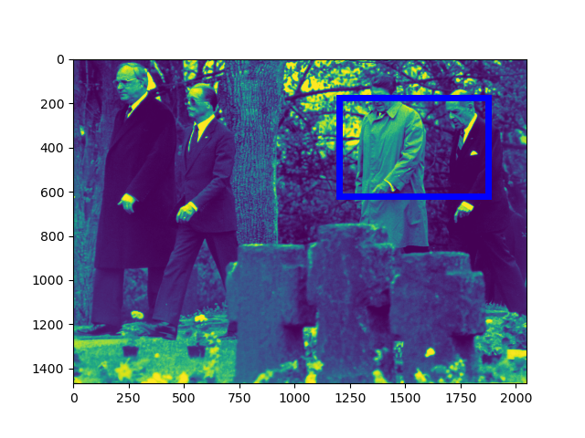
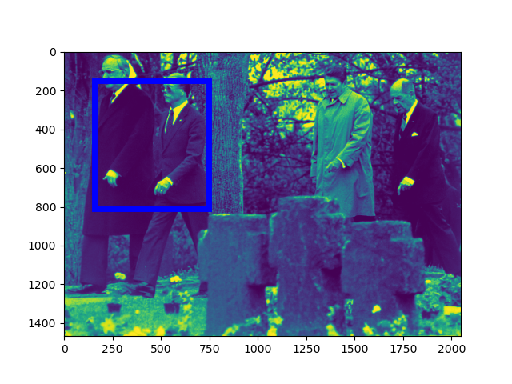
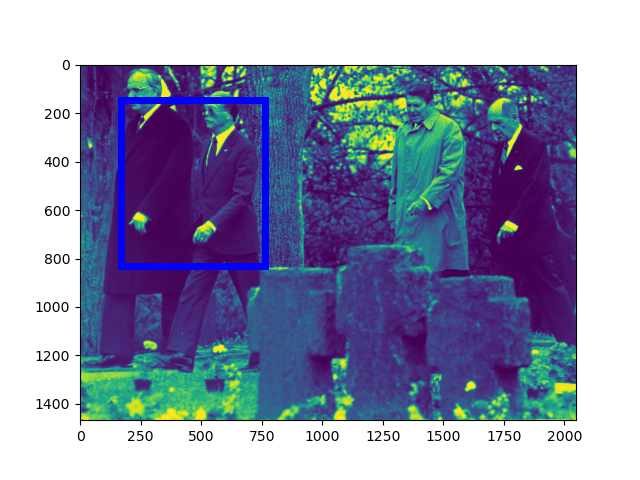
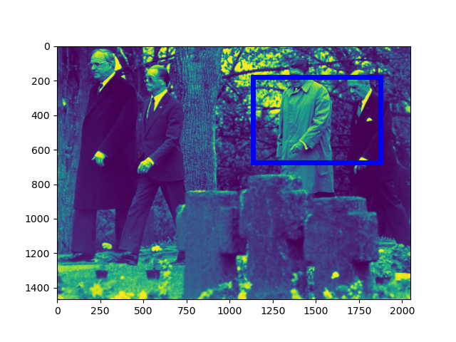

[Raw Text]: FILE German Chancellor Helmut Kohl walks with retired German Air Force General Johannes Steinhoff (frt) and former President Ronald Reagan accompanied by retired U.S. General Matthew Ridgway through the German military cemetary in Bitburg, May 5 1985.
======================================================================
Mention: http://www.isi.edu/gaia/entities/uiuc/VOA_EN_NW_2017_06_16_3903412_3/EN_Entity_EDL_0000369
---- VOA_EN_NW_2017_06_16_3903412_3:175-189 FILE German Chancellor Helmut Kohl walks with retired German Air Force General Johannes Steinhoff ( frt ) and former President Ronald Reagan accompanied by retired U . S . General Matthew Ridgway through the German military cemetary in Bitburg , May 5 1985 .
---- VOA_EN_NW_2017_06_16_3903412_3:167-173 FILE German Chancellor Helmut Kohl walks with retired German Air Force General Johannes Steinhoff ( frt ) and former President Ronald Reagan accompanied by retired U . S . General Matthew Ridgway through the German military cemetary in Bitburg , May 5 1985 .
Image:
GroundingConfidence: http://www.columbia.edu/AIDA/DVMM/Entities/GroundingBox/RUN00006/JPG/VOA_EN_NW_2017_06_16_3903412_3/1, 0.3074398

GroundingConfidence: http://www.columbia.edu/AIDA/DVMM/Entities/GroundingBox/RUN00006/JPG/VOA_EN_NW_2017_06_16_3903412_3/2, 0.3074398

Event:
======================================================================
Mention: http://www.isi.edu/gaia/entities/uiuc/VOA_EN_NW_2017_06_16_3903412_3/EN_Entity_EDL_0000368
---- VOA_EN_NW_2017_06_16_3903412_3:125-137 FILE German Chancellor Helmut Kohl walks with retired German Air Force General Johannes Steinhoff ( frt ) and former President Ronald Reagan accompanied by retired U . S . General Matthew Ridgway through the German military cemetary in Bitburg , May 5 1985 .
---- VOA_EN_NW_2017_06_16_3903412_3:115-123 FILE German Chancellor Helmut Kohl walks with retired German Air Force General Johannes Steinhoff ( frt ) and former President Ronald Reagan accompanied by retired U . S . General Matthew Ridgway through the German military cemetary in Bitburg , May 5 1985 .
Image:
GroundingConfidence: http://www.columbia.edu/AIDA/DVMM/Entities/GroundingBox/RUN00006/JPG/VOA_EN_NW_2017_06_16_3903412_3/4, 0.6301764

GroundingConfidence: http://www.columbia.edu/AIDA/DVMM/Entities/GroundingBox/RUN00006/JPG/VOA_EN_NW_2017_06_16_3903412_3/3, 0.6301764

Event:
======================================================================